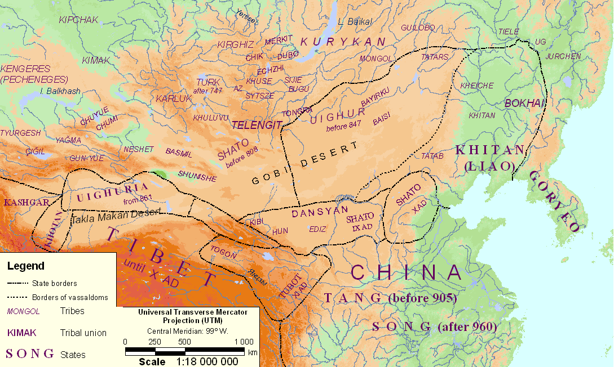

Gumilev L.N., Searches for an Imaginary Kingdom: The Legend of the Kingdom of Prester John (Cambridge University Press. 1988)
Map 1. Tribes of the Great Steppe from Eighth to Tenth Centuries (Russian versian)
|  |
 |
General note. In the eighth century, dominance of the Great Steppe passed from Turks to Uighurs (747) and then to the Kirghiz (847), but the limits of the kaganates are omitted on the map (see L.N. Gumilev, The Ancient Turks (in Russian), Moscow, 1967). Attention is paid to the small tribes who by the tenth century fused together into peoples and formed the five great states: Khitan (Chinese Liao), Shato (Kin), Dansyan (later Tangut, Chinese Xi-xia), Uighuria (Chinese Khoikhu) - two independent principalities, and the Tibetans who later created the ephemeral Tubot kingdom. As regards ethnogenesis, tribes small in numbers deserve great attention so we here give their ethnic classification, embracing linguistic, anthropological and historical data.
A. Turkic-speaking tribes
I. Europeoid west Siberian tribes
(1) Kengeres (Kangar, Kangyui, Kengerli, Pechenegs)
(2) Kirghiz, Eniseiones (Gegu, Khagyas)
(3) Kipchak (Kyui-yue-she, Polovtsy)
(4) Cigil (Jikil)
(5) Tyurgeshi (people consisting of two large tribes: the Abar aborigines of Dzungaria and the Mukrin nomads coming from the Amur in the third century).
II. The Teless group of tribes who spread from Khesi throughout the Great Steppe in the 4th cent.; Europeoid, deriving from the eastern branch of the I order white race.
(1) Uighurs or Tokuz-Oguz (Chinese Khoikhu)
(2) Yagma (Chinese Yan-mian)
(3) Tongra (Chinese (Tongluo)
(4) Bugu (Chinese Pugu)
(5) Kurykan (Chinese Guligan)
(6) Izgil (Chinese Sijie)
(7) (Chinese Sytsze)
(8) Telengit (Chinese Duolange)
(9) Bayirku (Chinese Bayegu)
(10) Ediz (Chinese Adie)
(11) (Chinese Huxie)
(12) (Chinese Kibi)
(13) (Chinese Hun)
(14) (Chinese Baisi)
(15) (Chinese Gong-yue), their Teless origin is doubtful
III. The Chui group, descendants of the Hun who remained in Central Asia in the second cent.
(1) Chuyue
(2) Chumi
(3) Shato, offshoot of the Chuyue
(4) Kimek (Chinese Chumugun); united with the Kipchak and formed the Koman (Cuman) people or Polovtsy
IV. Dzungarian group
(1) Karluk
(2) Basmil
(3) Neshet
(4) Shu-ni-she
(5) Khuluvu
(3, 4, 5 - united with Basmil and took their name)
V. Sayan-Altai group
(1) Chik a people who died out, in contemporary Tuva
(2) Tubalar (Chinese Dubo)
(3) Echzhen (Chinese Ezhi)
(4) Turk after 747 (Chinese Tujue/Turku), a branch of the Gokturk (Blue, or Heavenly, Turks who lived on the Orkhon until 747; they settled in the Mountain Altai as Teles (tribe) and Todosh (group). At the present time they have fused with the Telengit. In the tenth to twelfth centuries they were known as Tikin (from Turkish Tegin "prince'); evidently the title of their ruler). Conquered by the Mongols in 1207-8.
B. Mongol-speaking peoples
(1) Khitan or Khitai
(2) Tatab (Chinese Xi)
(3) Togon or Tu-yu-hun, a branch of the Xian-bi in the fourth century who migrated to Tsaidam and were conquered by the Tibetans in seventh cent.
(4) Tatars, a tribal union
(5) Mongols in the strict sense of the word.
C. Tungus-speaking tribes
(1) T'ele
(2) Ugi
(3) Jurchen
D. Tibetan-speaking tribes
(1) Dansyan, or Tangut, descendants of ancient Zhun
(2) Tubo, or Tibetans, descendants of ancient Kyan
E. Tribes whose ethnic group is unclear
(1) Merkit, perhaps Turk, perhaps Mongol, perhaps Samodii
(2) Az, perhaps part of Kirghiz people, perhaps simply a "small minority"
(3) Gyuilobo, ?!
(4) Heiche, a nickname, literally Black Wagon. Chinese geographers considered they lived on the borders of the real and the fantasy worlds where the "Turks with cows' feet" allegedly lived.
Links
Follow pages refer to this map:
- Gumilev L.N. Searches for an Imaginary Kingdom: The Legend of the Kingdom of Prester John. The trefoil of the bird's eye view. 4. The Dark Century (861≈960).
- Gumilev L.N. Searches for an Imaginary Kingdom: The Legend of the Kingdom of Prester John. The trefoil of the bird's eye view. 5. The Shattered Silence (961≈1100).
- Gumilev L.N. Searches for an Imaginary Kingdom: The Legend of the Kingdom of Prester John. The trefoil of the bird's eye view. 6. Foreshadowing the Legend's Hero (1100≈1143).
- Gumilev L.N. Searches for an Imaginary Kingdom: The Legend of the Kingdom of Prester John. The Trefoil of the Tree of Thought. 14. A Space-Time Scheme.
Map was created by A. Rodionov in 2008 with help by the original procedure (in Russian).
Эта страница была последний раз обновлена 08/29/08.